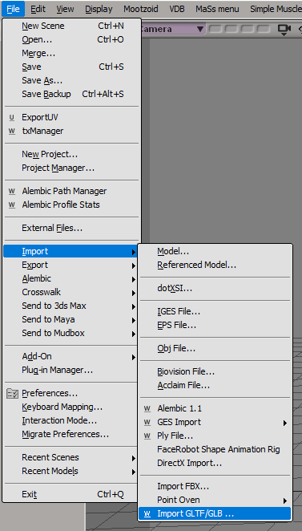

Softimage GLTF
Last update: 21.06.2022
Description: This addon allows to import *.gltf and *.glb files into Softimage. It based on tinygltf library. The addon supports the following items from gltf/glb scenes:
- Scene hierarchy
- Cameras
- Polygonmesh objects. Import the following mesh attributes:
- Vertex positions
- Polygon indices
- vertex normals
- Vertex uvs
- Vertex colors
- Envelope weights
- Shape deforms, supports only vertex positions
- Transform animations
- Skin deformers
- Materials
The addon does not supports gltf extensions. It recognize only default gltf nodes and attributes.
Download: Softimage GLTF R.1. There are sources of the addon on the GitHub.
How to use: Install as usual addon for Softimage.
Import
Select File - Import - Softimage GLTF - Import GLTF/GLB...
Select input file and scene items to import
Press Ok